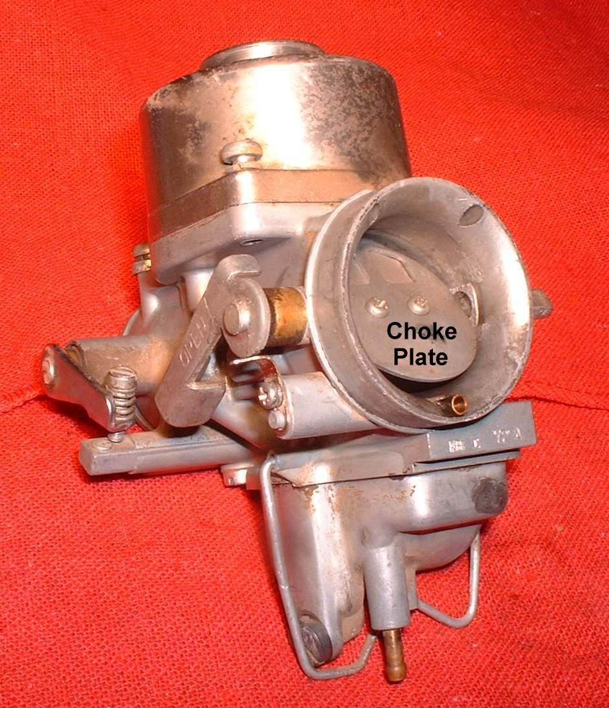

Home mechanic (basic tools) · Time: 20 to 45 min (estimate) (estimate)
A cold engine needs a richer mixture to start, because cold fuel does not turn to vapour easily. The choke gives this extra fuel. If it sticks ON, the warm engine runs rich, smokes black, wastes fuel and may stall. If it never works, the engine is hard to start cold. There are four common types:
| Type | Where | How it works |
|---|---|---|
| Butterfly choke | Older carburettors, many small commuters | A flap closes the carburettor inlet so the engine sucks harder on the jets |
| Starter plunger (enrichener) | Most modern carburettors | A plunger opens its own small jet and air passage; works only with the throttle closed |
| Automatic choke | Many carburettor scooters | An electric heater or wax element closes the plunger as the engine warms |
| ECU fast idle | Fuel-injected bikes | No choke. The ECU adds fuel and raises idle while cold |
Safety
- Engine cold before you touch the carburettor; run engine tests outdoors.
- Do not hold the throttle open while using a starter plunger: it stops working.
Steps
Lever or knob choke (butterfly or plunger)
- Work the choke lever from OFF to ON. It should move smoothly and stay where you leave it.
- Remove the air filter cover if needed and watch the butterfly or the plunger at the carburettor. In OFF the flap must be fully open, or the plunger fully seated (all the way down).
- If the plunger does not seat, check the cable has a little free play at OFF. Adjust it, or see Adjust the choke cable.
- Unscrew the plunger nut and pull the plunger out. Clean varnish from the plunger and its bore with carburettor cleaner. Replace the plunger if its rubber tip is damaged.
- A stiff, frayed or kinked cable: see Choke lever or cable does not work.
Automatic choke (scooters)
- Cold engine: the plunger should be out (rich). After a few minutes of running it should move in. If idle stays fast and black smoke continues when warm, the automatic choke is not closing.
- Check its two-pin connector is clean and tight. With a multimeter, a workshop can check the heater resistance and its power supply with the engine running against your manual's values. A failed automatic choke is replaced as a unit.
Fuel-injected bikes
- A raised idle when cold is normal. The K-Light 125 ECU raises idle until the engine reaches 68 °C. If the idle stays high when fully warm, or starting cold is hard, the cause is usually the temperature sensor or idle air control. See Check the engine sensors and Read engine fault codes.
More tips
- Most carburettor chokes are an enrichening plunger that lifts to open a passage to a small jet cast in the float bowl. If that jet or tube is blocked, the choke does nothing. See Clear the choke circuit.
- A butterfly choke is a plate in the air inlet. Check that it closes fully and springs open.
Check your work
- Cold: the engine starts with the choke ON and idles fast.
- Warm, choke OFF: normal idle, no black smoke, no fuel smell at the exhaust.
If it did not fix the problem
- Spring-loaded plate choke: a broken spring is not always obvious, so feel the lever. See Check a plate or guillotine choke and its spring.
- Starter plunger (knob, lever or cable type): the throttle must be closed so the vacuum can work it. See Check a starter plunger and its jet.
- Scooter with no choke lever: see Check an automatic starter.
- Starts only with the choke even when warm: the pilot circuit is blocked or there is an air leak. See Starts only with the choke on.
- Hard cold start with a working choke: see Hard to start when cold.
Reference values (K-Light 125)
| Item | Value | PDF page |
|---|---|---|
| ECU fast idle | Active below 68 °C engine temperature | 276 |